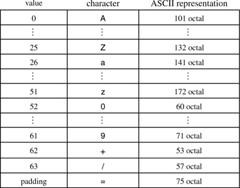

Networking Security Networking Security Networking Security Security Networking Security Networking Security Networking Charlie Kaufman Radia Perlman Mike Speciner Prentice Hall Network Security: Private Communication in a Public World, Second Edition Networking Security Networking Security Networking Security Security Networking Security Networking Security Networking Charlie Kaufman Radia Perlman Mike Speciner Prentice Hall Network Security: Private Communication in a Public World, Second Edition
21.7. Reformatting Data to Get Through Mailers
As discussed in §20.14 Annoying Text Format Issues, the mail infrastructure on which PEM depends for delivering messages might modify messages. PEM needs a reversible encoding of a message that will transit through all known kinds of mail gateways (and even those the PEM designers don't know about, hopefully) without having the gateways feel compelled to mess with the data. The theory is, if no "funny" characters are used, lines are a reasonable length, you don't care about the value of the high-order bit (the parity bit), and all lines are terminated with <CR><LF>, your data will be safe from helpful mail forwarders.
PEM packs 6 bits of information into each 8-bit character. It takes 24 bits of input and converts that into 32 bits (4 characters, each of which will be transmitted as 8 bits). If the data does not consist of an integral number of 24-bit chunks, it is padded with 0 bits to the next multiple of 24 bits, and each octet of pad bits is encoded by =. Actually, PEM packs 65 values into the 8 bits, since the padding gets converted to the = character, which is not one of the 64 characters used for encoding information. The encoding characters consist of the 26 upper-case (AÂZ) and 26 lower-case (aÂz) letters, the ten digits (0Â9), +, and /. PEM uses the character = for the one or two possible padding characters necessary at the end of the data. For those who care, the table of encodings is as follows:

|